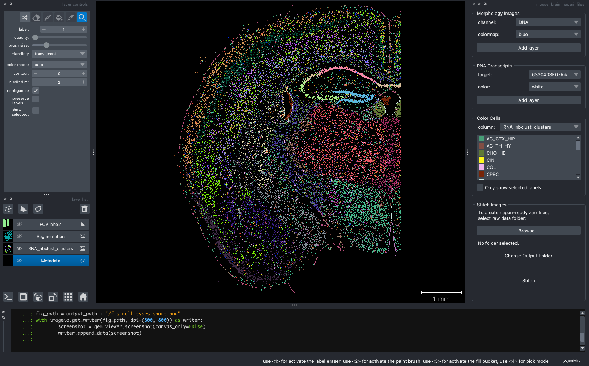
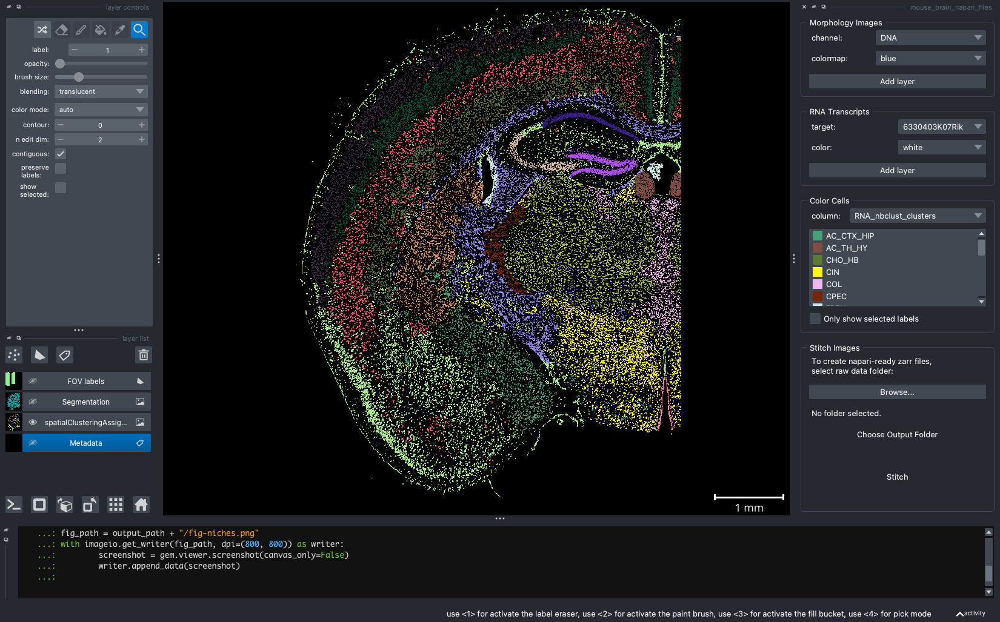
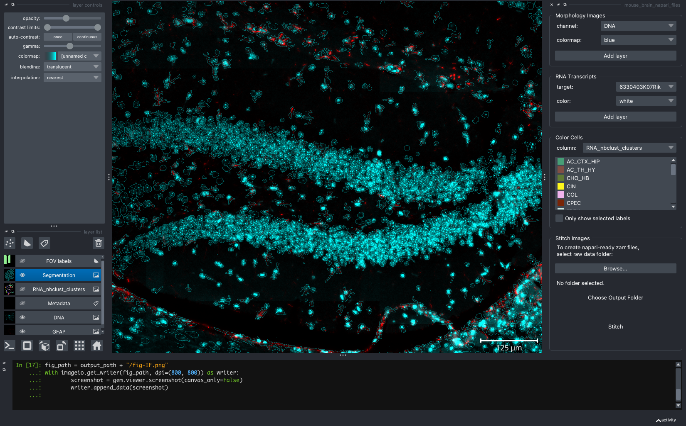
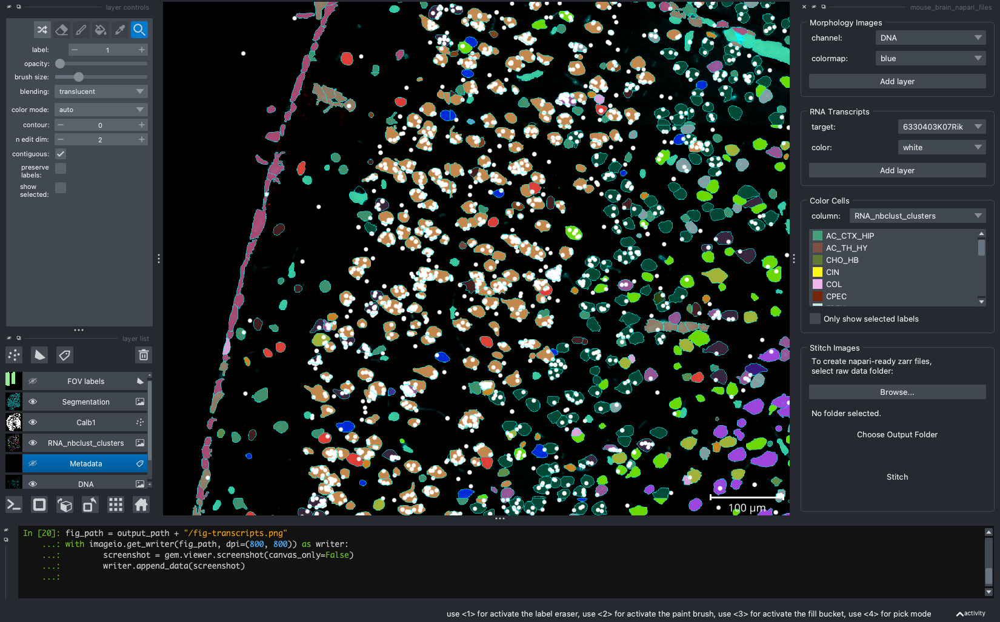

In this post, I walk through some of the basic ways I use napari-cosmx to view and analyze SMI data. I will make use of this GUI/scripting duality and share a combination of GUI and programmatic tips and tricks.
Figure 1: Drawing that represents the duality of napari-cosmx. On the left side, cell types within a mouse coronal hemisphere are shown in an interactive Graphical User Interface. In addition to creating images interactively, the right side highlights that images can be generated programmatically. Both sides of napari-cosmx are discussed in this post.
1 Introduction
This post is the second installment of the napari series. In the first blog post I introduced the napari-cosmx plugin, how CosMx™ Spatial Molecular Imager (SMI) data can be viewed as layers within napari, and a method for processing, or “stitching”, raw data that are exported from AtoMx™ Spatial Informatics Portal (SIP).
One of the things that I love about the napari-cosmx plugin is its duality. It’s flexible enough to quickly explore SMI data in a Graphical User Interface (GUI) yet robust enough to script reproducible results and tap into the underlying python objects. In this post, I’ll walk through some of the basic ways in which we can use napari-cosmxto view SMI data. I’ll make use of this duality by sharing a combination of GUI and programmatic tips.
Note
This is not intended to be official documentation for the napari-cosmx plugin. The tips herein are not an exhaustive list of features and methods.
Section 2 shows how to preprocess the example dataset. If you are using your AtoMx-exported SMI data, this section is optional
Section 3 shows basic GUI tips for interacting with SMI data
Section 4 provides several examples of recapitulating the aesthetics seen with the GUI as well as advanced ways we can fine-tune images and more
2 The Example Dataset
The example dataset that I am using is the mouse coronal hemisphere FFPE that is available to download from NanoString’s website here. If you are following along with your AtoMx exported data, you can skip most of these pre-processing steps as they are not required (but see Section 2.1.2 if you would like to view metadata).
Note
Large memory (RAM) might be required to work with raw images. Stitching the example data on a laptop might not work for everyone. The raw data size for this example is 183 GBs. Not all raw data are needed to stitch, however, and users can exclude the CellStatsDir/Morphology3D folder if downloading locally. If excluding this folder, the raw data is closer to 35 GBs.
The computer I used to stitch was an M1 Macbook Pro. Processing this 130 FOV, mouse 1K data set took about 10 minutes, ~700% CPU, and a peak memory usage of about 12 GBs (swap space was also used). The size of the napari files combined was an additional 22 GBs of disk space.
2.1 Pre-processing example data
Once downloaded, unzip the HalfBrain.zip file on your computer or external hard drive. The format for this dataset differs from the expected AtoMx SIP export so a preprocessing step is necessary.
When uncompressed, the raw data in the HalfBrain folder are actually nested like this:
In order for napari-cosmx to stitch this non-AtoMx example dataset, we’ll need to rearrange the folders so that the nested raw data are at the top level. After rearrangement, the proper file structure should look like this:
There are a few ways to rearrange. The first method retains the original folder structure and simply makes symbolic links to the data in the expected format. Here’s how to do it in unix/mac (Windows not shown).
Terminal
# Terminal in Mac/Linux# cd to folder containing HalfBrain. Then, mkdir -p RawFiles && cd $_ln -s ../HalfBrain/AnalysisResult/HalfBrain_20230406_205644_S1/AnalysisResults .ln -s ../HalfBrain/CellStatsDir/HalfBrain_20230406_205644_S1/CellStatsDir .ln -s ../HalfBrain/RunSummary/HalfBrain_20230406_205644_S1/RunSummary .
Alternatively, we could manually move folders. Specifically, in your Finder window, create a folder named RawData. Then, move:
HalfBrain/AnalysisResult/HalfBrain_20230406_205644_S1/AnalysisResults to RawData/AnalysisResults
HalfBrain/CellStatsDir/HalfBrain_20230406_205644_S1/CellStatsDir to RawData/CellStatsDir
HalfBrain/RunSummary/HalfBrain_20230406_205644_S1/RunSummary to RawData/RunSummary
Once the file structure is properly formatted, use the stitching widget method from an earlier blog post to create the mouse brain napari files.
2.1.2 Adding metadata
We will also use the cell typing data from the Seurat file. Let’s include the following metadata columns:
RNA_nbclust_clusters: the cell typing results (with abbreviated names)
RNA_nbclust_clusters_long: (optional) human-readable cell type names
Note that the Seurat file contains two sections of mouse brain samples. We need to filter the metadata to include only those cells from Run1000_S1_Half. Note that when preparing the metadata for napari, the cell ID must be the first column (i.e., see the relocate verb in the code below).
# This is R codelibrary(Seurat)library(plyr)library(dplyr)# sem_path will be wherever you downloaded your Seurat objectsem_path <-"/path/to/your/muBrainRelease_seurat.RDS"sem <-readRDS(sem_path)meta <- sem@meta.data %>%filter(Run_Tissue_name=="Run1000_S1_Half") %>%select(RNA_nbclust_clusters, RNA_nbclust_clusters_long, spatialClusteringAssignments)meta$cell_ID <-row.names(meta) # adds cell_ID columnrownames(meta) <-NULLmeta <- meta %>%relocate(cell_ID) # moves cell_ID to first column positionwrite.table(meta, file="/path/to/inside/napari-ready-folder/_metadata.csv", sep=",", col.names=TRUE, row.names=FALSE, quote=FALSE)
Now that the data are ready, drag and drop the slide folder into napari to launch the plugin.
3 Interacting with the GUI
This section focuses on features relevant to the napari-cosmx plugin. Users new to napari may find napari’s general viewer tutorial helpful as well.
When we open a slide with napari-cosmx, by default there will be a few napari layers visible (Initial View tab; Figure 2). These include FOV labels and Segmentation. Clicking the eye icon next to a layer will change its visibility. Let’s turn off those layers for a moment and visualize the cell types from the RNA_nbclust_clusters column (Cell Types tab; Figure 3). We can also color cells by their spatialClusteringAssignments values (Niches tab; Figure 4). In the Color Cells widget, we can control which cell types or niches we would like to view. When we activate the Metadata layer, hovering over a given cell will display the metadata associated with it as a ribbon at the bottom of the application. To view the IF channels, use the Morphology Images widget, In Figure 5 (IF Channels tab) I turned off the visibility of the cell types, added GFAP in red and DNA in cyan, and zoomed into the hippocampus. When I click on a layer, it becomes the activate layer and I can use the layer controls widget to adjust attributes to that layer such as contrast limits, gamma, layer blending, and more. Finally, we can view raw transcripts (or proteins). Simply select the target and the color and click Add layer. In Figure 6 (Transcripts tab), I zoomed in on a section of the cortex and plotted Calb1.
Like other programs that use layers, napari allows the layers to be moved up/down and to blend (not shown below).
Figure 2: The initial view of the tissue shows the location of FOVs and cell boundary layers. Yellow arrow shows location of ipython terminal.

Figure 3: Same extent as Figure 2 and displaying the cell type from the ‘RNA_nbclust_clusters’.

Figure 4: Cells colored by niche

Figure 5: Hippocampal region of tissue with GFAP (red) and DNA (cyan).

Figure 6: Expression of Calb1 (white dots) in cortex layer I.
To capture screenshots, simply click File > Save Screenshot.... The images above are captured “with viewer” but that is optional.
4 Scripting with napari-cosmx
This section is for advanced users who want finer control of the aesthetics.
Most of the items we’ve covered can also be accessed through various methods in the gem object that can found loaded in the >_ipython interpreter (i.e., yellow arrow in Figure 2). You may have noticed in the figures above that there was code being used to take the screenshots. Here’s the full script that can help reproduce the figures above. I use reproducible scripts often. This is because I may want to make slight changes to a figure down the road. For example, if a reviewer overall likes an image but asks for the cell colors to be different, I just need to change the colors in the code and the script will pan and zoom where needed, set the IF channels and contrasts, and reproduce other layers programmatically.
In practice, I use the GUI to adjust the settings (e.g., zoom, opacity) and then “jot down” the results in my text editor. For example, when I zoom or pan to another location, that location can be found at:
gem.viewer.camera.zoomgem.viewer.camera.center
Similarly, the contrast limits and gamma values for IF channels can be saved as well.
dna = gem.viewer.layers['DNA']dna.contrast_limits = [208.39669421487605, 1328.5289256198346]dna.gamma =1.1682758620689655
Screenshots can be done programmatically with the napari’s screenshot method and there are additional settings you can change (e.g., just the canvas, scale) that we won’t cover here.
There are also methods available in napari-cosmx that do not have the GUI equivalent. We won’t be able to touch on all of these methods in this post but I want to highlight a few.
4.1 Color cells with outlines
We can plot the cell colors as boundaries instead of filled in polygons (Figure 7).
Figure 7: Cells types (or other metadata items) can be represented as cell boundaries.
4.2 Plot transcripts with an expanded color pallette
The GUI offers a handful of colors to plot transcripts. We can specify which color, by name or by hexcode, to plot. For example:
gem.plot_transcripts(gene ="Calb1", color ='pink', point_size=20)
which is the same as
gem.plot_transcripts(gene ="Calb1", color ='#FFC0CB', point_size=20)
4.3 Plotting genes with list comprehensions
We can plot similar genes or targets with the same color. For example, the code that generated Figure 8 is here.
gem.viewer.camera.center = (0.0, -0.6346878790298397, -54.95271110236874)gem.viewer.camera.zoom =2113.6387223301786df = gem.targetsfiltered_df = df[df.target.str.contains("NegPrb")]pandas_df =filtered_df.to_pandas_df()negatives =pandas_df.target.unique().tolist()[gem.plot_transcripts(gene = x, color ="white", point_size=20) for x in negatives];fig_path = output_path +"/fig-negatives.png"with imageio.get_writer(fig_path, dpi=(800, 800)) as writer: screenshot =gem.viewer.screenshot(canvas_only=False)writer.append_data(screenshot)
Figure 8: Same extent as Figure 7 but with negatives shown in white.
We can also supply of list of tuples where each tuple is a target and a color.
genes = [('Npy', "magenta"), ("Calb1", "white")][gem.plot_transcripts(gene = x[0], color = x[1], point_size=20) for x in genes];for x in negatives: gem.viewer.layers[x].visible = Falsegem.color_cells('RNA_nbclust_clusters') # reset to filled contourscell_type_layer = gem.viewer.layers['RNA_nbclust_clusters']cell_type_layer.opacity =0.9cell_type_layer.visible = Truegem.viewer.camera.center = (0.0, -0.026937869510583412, -59.20560304046731)gem.viewer.camera.zoom =3820.667999302201gem.viewer.layers['Segmentation'].visible = Truegem.viewer.layers['Segmentation'].opacity =0.6fig_path = output_path +"/fig-crowded-tx.png"with imageio.get_writer(fig_path, dpi=(800, 800)) as writer: screenshot =gem.viewer.screenshot(canvas_only=False)writer.append_data(screenshot)
Figure 9: Cortical layer with Npy (magenta) and Calb1 (white).
4.4 Changing transcript transparency
Sometimes transcripts can be stacked on top of each other to the point that it’s difficult to qualitatively determine the number of transcripts. Adjusting the transcript opacity of the layer in the GUI only changes the transparency of a single point. But it’s possible to change all points using the ipython interpreter.
Figure 10: Same extent as Figure 9 but opacity of Npy reduced from 1 to 0.5.
4.5 Center to a particular FOV
While zooming (gem.viewer.camera.zoom) and panning (gem.viewer.camera.center) can control the exact location of the camera, you can programmatically go to a particular fov with the center_fov method.
# center to fov 123 and zoom in a little (i.e., buffer > 1).gem.center_fov(fov=123, buffer=1.2)fig_path = output_path +"/fig-center-to-fov.png"with imageio.get_writer(fig_path, dpi=(800, 800)) as writer: screenshot =gem.viewer.screenshot(canvas_only=False)writer.append_data(screenshot)
Figure 11: Centering to a particular FOV (123) using the center_fov method.
4.6 Plot all transcripts
This is not advised for resource-limited systems as it plots all transcripts. The method add_points plots all the points for a given FOV. If no FOV is specified, it will plot all transcripts (this can be taxing on resource-limited computers).
For some publication styles (e.g., posters), turning the background a lighter color might be useful. However, when changing the background, some items might be more difficult to see (compare Figure 7 with Figure 13).
Figure 14: Same extent as Figure 7 but with a scale bar moved to the bottom left.
4.9 Specify individual cell types
Here’s my last tip for this post. Using the color_cells method, one can choose the color of the cell types and which cells to color by supplying a dictionary. If a cell type is not in the supplied dictionary, it will not be shown as a color.
custom_colors = {"MOL":"#AA0DFE","GN":"#85660D","CHO_HB":"orange"# need not be hexcode}gem.color_cells('RNA_nbclust_clusters', color=custom_colors)fig_path = output_path +"/fig-color_three.png"with imageio.get_writer(fig_path, dpi=(800, 800)) as writer: screenshot =gem.viewer.screenshot(canvas_only=True)writer.append_data(screenshot)
Figure 15: Same extent as Figure 7 highlighting three cell types only. MOL = mature oligodenrocytes = purple; GN = granule neurons = brown; CHO_HB = Cholinergic neurons Habenula = orange; cyan = all other cells.
5 Conclusion
In this post I showed you some of my go-to napari-cosmx plugin features that I use when analyzing SMI data. In my workflow, I take advantage of the plugin’s interactivity as well as its underlying functions and methods. This comes in the form of “jotting down” settings for reproducibility or fine-tuning an image’s aesthetics ahead of publication. I couldn’t cover all the things this plugin can do but look for other tips in future posts.
![]()